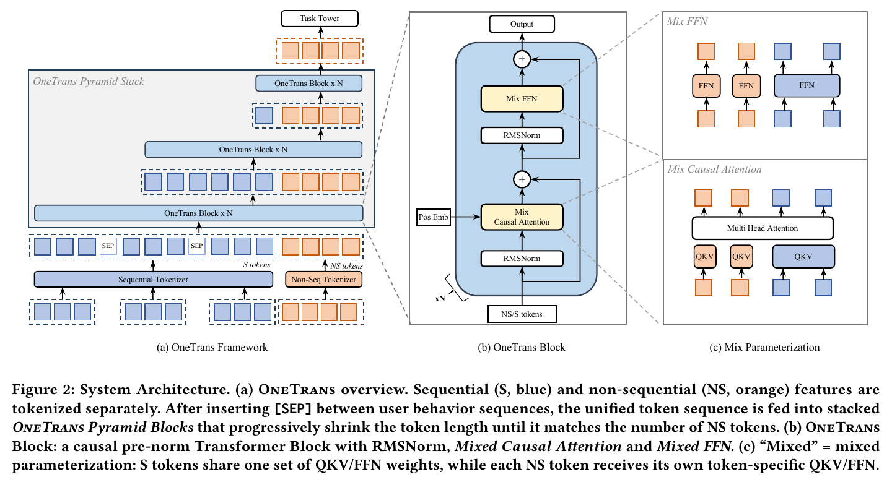

> 数据基准：16 die（2 节点 × 8）· CANN 9.1.0 · torch 2.10.0 / torch_npu 2.10.0 · 2026-11-17 > 代码：github.com/xiaomingyao/OneTrans-S（上游 GPU 参考锁定 8febd7e）
目的：在昇腾 950DT 上复刻论文 arXiv:2510.26104v3 的 OneTrans-S 训练，实测步时、吞吐、显存与算力利用率，并与论文同规模平台并列比较。
范围：
| 项 | 本报告范围 |
|---|---|
| 训练 | ✅ 前向 + 反向 + 优化器，单步稳态（不含取数与 H2D） |
| 推理 | ❌ 不涉及（无 P99、无 cross-request KV cache、无在线服务） |
| 规模 | 16 die（2 节点 × 8），全局 batch 32,768，与论文 16 卡对齐 |
| 对照 | 论文 Table 4 的 5 档步时（407 / 290 / 284 / 203 / 273 ms，单点消融、百分比相对 407） |

| 子图 | 内容 | 解读 |
|---|---|---|
| (a) OneTrans Framework | 序列特征（S，蓝）与非序列特征（NS，橙）分别 tokenize → 插入 [SEP] → 拼成统一序列 → 堆叠 OneTrans Pyramid Stack → 尾部位置进 Task Tower | 关键在"堆叠 + 收缩"：每层只把尾部若干位置上送，前面的位置被截断，位置数逐层递减 |
| (b) OneTrans Block | NS/S tokens + 位置编码 → RMSNorm → Mix Causal Attention → 残差 → RMSNorm → Mix FFN → 残差 | 标准 Pre-Norm Transformer 块，但两个子层都是"混合"的：S 与 NS 走不同权重 |
| (c) Mix Parameterization | Attention 侧：S 组一段 QKV、每个 NS token 各一段 QKV；FFN 侧：S 组一个 FFN、每个 NS token 各自一个 FFN | S token 共享一套 QKV/FFN；每个 NS token 拥有自己的 token-specific QKV/FFN ⇒ 参数量随 NS 数线性增加 |
非序列特征 ──Non-Seq Tokenizer──→ 12 个 NS token ─┐
├─ [SEP] + concat ──→ 1203 个位置
序列特征 ────Sequential Tokenizer─→ 1190 个 S token ┘ │
↓
┌──────────── OneTrans Pyramid Stack（7 次 block-pass）──────────┐
│ pass 1 (base) : query 1203，K/V 1203 │
│ stack0: 1203 → stack1: 960 → stack2: 736 │
│ stack3: 480 → stack4: 256 → stack5: 12 │
└──────────────────────────────────────────────────────────────┘
↓
取最后 12 个位置 → mean pooling → LayerNorm → Linear → sigmoid| 环节 | 尺寸 | 说明 |
|---|---|---|
| 统一序列 | 1190 + 12 + 1 = 1203 | 1 个 [SEP] 分隔用户行为序列与 NS token |
| 逐层 query 长度 | 1203 → 1203 → 960 → 736 → 480 → 256 → 12 | 32 对齐的线性收缩，顶层 = NS 数 |
| K/V 长度 | 等于上一层的输出长度 | 掩码为底右对齐因果（col ≤ row + (Lk − Lq)） |
| 项 | 值 | 项 | 值 |
|---|---|---|---|
| 宽度 d / 头数 H | 256 / 4（head_dim 64） | 层数 | "6 stacked"（实测口径对应 7 次 block-pass） |
| FFN 宽度 | 1536（= 6×d，SiLU×2） | 序列长度 | 1190 → 12 |
| NS token | 12（+[SEP] 1） | 参数量 | 91,026,946（论文 91 M） |
| per-GPU batch | 2048（全局 32,768） | 精度 | bf16（论文基线 fp32） |
| 优化器 | AdamW(5e-3) | 梯度裁剪 | 未实现（论文 dense 90 / sparse 120） |
> 论文原文（§4.1.2 脚注）："all-reduce on 16 H100 GPUs"；全文无 A100 字样，故下表按原文标注 16 卡平台。 > 若需 A100 口径，需另找 A100 实测数据（§5.3 已并列 A100 硬件参数，可作换算参考）。
| 优化项 | 做了什么 | 论文训练步时（407 ms 基线上单点打开） | 显存 |
|---|---|---|---|
| 基线（无优化） | fp32、朴素注意力、全长序列 | 407 ms | 53.13 GB |
| ① 金字塔压缩 Pyramid Stack | 逐层尾部截断：只让尾部 L 个位置做 query，L 从 1190 线性收到 12（32 对齐）；参数共享不变，纯算法改动 | 290 ms（−28.7%） | 30.50 GB |
| ② Cross-request KV 缓存 | 跨请求复用历史 K/V，主要收益在推理侧（训练侧只省显存） | 284 ms（−30.2%） | 22.10 GB |
| ③ FlashAttention-2 | 分块 + 在线 softmax，不再物化 S² 注意力矩阵 | 203 ms（−50.1%） | 21.84 GB |
| ④ 混合精度 + 重算 | bf16 前反向 + 激活重算换显存，从而支撑 per-GPU batch 2048 | 273 ms（−32.9%） | 27.10 GB |
读法：四行是单点消融（每行 = 407 ms 基线上单独打开该项），故 203 与 273 不构成先后关系； 203 ms 是步时最低点，273 ms 是唯一与本仓同精度档（bf16 + 重算）的一行，本报告以它为对标基准。
| 项 | 值 |
|---|---|
| 加速器 | Ascend950DT_9582，16 die = 2 节点 × 8（122 + 111），1 die = 1 卡 |
| 软件栈 | CANN 9.1.0 · torch 2.10.0+cpu · torch_npu 2.10.0 · triton 3.2.0 · Python 3.12 |
| 单卡算力 | bf16 Cube 432 TF/s（32 AI core × 1650 MHz；真机 matmul 校核 429.8 TF = 99.5% 峰值） |
| 单卡显存 | 容器可见 91.75 GiB/die（标称 144 GB，差异待核）；实测带宽 3.22–3.92 TB/s |
| 互连 | HCCL（RoCE + UB）；AllReduce 19.5 ms/步，暴露 4.7 ms（0.8%） |
基线：上游 WestbrookLong/OneTrans_Pytorch（单卡、无分布式、无任何 NPU 代码）。 优化开关全关时与上游逐位等价：949 个张量 key+shape 全等、前向输出 md5 相同、参数量 91,026,946 一致。
| 阶段 | 改动 | 具体内容 | 判据 | ||
|---|---|---|---|---|---|
| 一 环境与设备 | 新增 npu_compat.py（160 行）+ 装配层（138 行） | device 增加 npu；固定环境指纹四项（SoC / CANN / torch_npu / driver）；torchrun + DDP over HCCL 替代单卡脚本（broadcast_buffers=False、find_unused_parameters=True） | device_type=npu、SoC 名正确、16 rank 全部起来 | ||
| 二 稀疏特征与 Embedding | 0 行 | 无稀疏表：91 M 参数全稠密、81 个张量、最大 5 MB；`grep -c "nn.Embedding\ | EmbeddingBag\ | torchrec"` = 0 | 参数与上游逐位一致 |
| 三 注意力算子 | main_pytorch.py 9 行（env 开关） | SDPA → torch_npu.npu_fusion_attention（aclnn FA v4）：atten_mask True=屏蔽（与 SDPA 相反）、BSH 布局、底右因果 | kernel 45→6、46.3→12.3 µs；logits 逐位相同 | ||
| 四 混合精度 | 0 行（走兼容层） | 冒烟用 autocast bf16 跑通；显式 bf16 干路属优化阶段（§4.3） | loss 有限、梯度无 NaN/Inf | ||
| 五 精度固化 | 新增 6 个测试脚本 | CPU golden 对拍三关：张量 1.49e-7、loss Δ 5.96e-8、梯度 `max\ | Δg\ | ` 4.88e-4（1 bf16 ULP） | 三关全 PASS |
改动集中在装配层，占上游参考实现 1,233 行的 5.4%（基础）/ 11.9%（含多卡）； models/taac_onetrans.py、损失、指标、数据管道 全部 0 行改动。
| 项 | 论文 | 本仓 | 判定 |
|---|---|---|---|
| 结构 | d=256、H=4、共享/独立混合参数化、Pre-Norm、底右因果 | 同（与上游逐位等价） | ✅ |
| 参数量 | 91 M（含稀疏 embedding） | 91,026,946（纯稠密，无稀疏表） | ✅ 数值 / ⚠️ 构成不同 |
| per-GPU batch | 2048 | 2048（档 A） | ✅ |
| 计算量 | 2.64 TFLOPs（nominal 6ND 口径） | 2.649 TFLOPs（同口径，差 0.03%）；实际分组计算 40.91 GFLOP/样本 | ✅ 同口径一致（附 A） |
| 精度档 | 基线 fp32 / 优化档 mixed precision | bf16 | ✅ 对应优化档 |
| 梯度裁剪 | global grad-norm，dense 90 | 未实现 | ⚠️ 缺失（只影响收敛，不影响步时口径） |
| 优化器 | RMSProp(5e-3) | AdamW(5e-3) | ⚠️ 不同（同上） |
| FFN 宽度 | 论文未给 | 1536（=6×d） | ⚠️ 推定值（靠它把参数对齐到 91 M） |
| 层数表述 | "6 stacked" | 1 base + 6 pyramid | ⚠️ 歧义（论文 nominal 算力按 7 次 pass 才对得上 2.64 T） |
| 口径 | 论文（16 卡） | 本仓（16 die） | 比值 |
|---|---|---|---|
| 开箱（无任何优化） | 407 ms（fp32、朴素注意力、全长序列） | 1,942.1 ms（MFU 7.70%、显存 52.30 GB） | 4.77× |
| 全局吞吐 | — | 16,872.3 sps | — |
> 两者卡数同为 16、全局 batch 同为 32,768，故比值可直接读作"开箱差距 4.77 倍"。 > 差距集中在三处：逐 token 小算子过多（Cat 51.4 ms/步）、attention 走 SDPA 回退、norm 无融合。
分析过程：① 读 step_trace_time.csv 的 Computing / Communication / Free 三列，先判定是否计算受限； ② 用差分法（全步 − --no-backward）拆前向与反向，避免把 CPU 入队窗口当成设备执行时间； ③ kernel_details.csv 按算子名家族聚合；④ 按 (name, shape) 聚合 TOP 单算子；⑤ 隔离探针复测单算子，区分"形状问题"与"调用问题"。
| 级 | 数据流节点 | 耗时 | 占全步 | 判据 / 观察 |
|---|---|---|---|---|
| 1 | 整个训练步 | 614.27 ms | 100% | Computing 605.5（98.6%）、通信 19.5（暴露 4.7）、Free 4.1、气泡 0 ⇒ 纯计算受限 |
| 2 | 前向 | 164.2 ms | 26.7% | 差分法测得；HBM 12.33 GB |
| 2 | 反向 + 优化器 + 通信 | 471.9 ms | 76.8% | 反向/前向 = 2.87× ⇒ 主战场 |
| 3 | GEMM（Mm / Addmm） | 176.1 ms | 28.7% | 前 58.9 / 反 117.2；277 TF/s（64.3% 峰值） |
| 3 | FA 反向 + 附属 | 139.7 ms | 22.7% | 151 TF/s（35.0% 峰值） |
| 3 | FA 前向 + 附属 | 47.4 ms | 7.7% | 193.8 TF/s（44.8% 峰值） |
| 3 | 向量类：Add 57.7 / SiLU 56.5 / 搬运 46.3 / RMSNorm 40.1 / ReduceSum 20.8 / Zero 14.0 | 235.4 ms | 38.3% | 带宽 3178–3358 GB/s ⇒ 已贴 HBM 峰值 |
| 3 | AllReduce | 19.5 ms | 3.2% | 暴露仅 4.7 ms（0.8%） |
| 4 | TOP 单算子 | FA grad 131.3（14 次）· Mm 108.6（152 次）· Add 56.9（479 次）· Addmm 53.6（78 次）· FA fwd 41.0（14 次）· SiluBwd 33.9（54 次）· InplaceCopy 26.0（236 次）· RmsNormGrad 24.5（28 次）· ReduceSum 21.1（200 次）· Zero 14.0（580 次） | — | 小算子密度极高：580 次 Zero（24 µs/次）、200 次 ReduceSum（105 µs/次，= F.linear 的 bias 梯度）、236 次拷贝插在 GEMM 之间 |
两条关键判断：
Addmm 走不同 kernel、拷贝插在 GEMM 之间）。| 分类 | 本仓优化项 | 开关 | 单步 Δ | 累计步时 |
|---|---|---|---|---|
| — | 起点 | — | — | 1,942.1 ms |
| ⑤ 布局与内存组织（论文未涉及） | NS 专有 QKV/FFN 由逐 token Linear 合成 bmm | NS_BMM | −25.70% | 1,442.9 ms |
| ⑤ | 融合 npu_rms_norm 替代手写 norm 链 | FUSED_NORM | −14.85% | 1,228.6 ms |
| ⑤ | 去 cat：预分配 + 原地写 | CAT_INPLACE | −9.48% | 1,112.1 ms |
| ① 金字塔压缩 | 结构内建（无开关；开/关实测 1.68×，与论文表 3.06× 口径未闭合） | — | — | — |
| ② Cross-request KV 缓存 | 不适用：训练任务无 request / 历史维度 | — | — | — |
| ③ FlashAttention-2 | SDPA 内置 causal 替代显式 mask | SDPA_CAUSAL | −5.06% | 847.3 ms |
| ③ | FA BSH 布局（省转置） | FA_BSH | −2.81%（单算子 −31.7%） | 823.5 ms |
| ⑤ | 全量投影 + 原地覆盖 NS 行 | FULL_PROJ | −11.13% | 753.0 ms |
| ⑤ | 与 FA BSH 同开 | — | −3.05% | 730.0 ms |
| ④ 混合精度 + 重算 | 显式 bf16 干路（关 autocast） | EXPLICIT_BF16 | −15.79% | 614.7 ms（−68.35%） |
> 档 A（论文口径：每卡 2048 + 激活重算）同配置为 752.0 ms / MFU 25.8% / 显存 39.17 GB； > 档 B（每卡 1024×2、无重算）= 614.7 ms / MFU 31.6% / 58.48 GB。二者只差 micro-batch 与重算，不可混读。
| 指标 | 本仓实测 | 论文（273 ms 档） | 比值 |
|---|---|---|---|
| 稳态步时 | 614.7 ms | 273 ms | 2.14× |
| 全局吞吐 | 53,307.4 sps | — | — |
| 每卡吞吐 | 3,331.7 sps | — | — |
| 算力利用率 MFU | 31.6%（主口径 83.8 TFLOP/卡/步） | 论文未给 S 的 MFU | — |
| 显存峰值 | 58.48 GB | 27.10 GB | 2.16× |
累计收益：相对本仓开箱 −68.35%（1,942.1 → 614.7 ms）。
| 项 | A100 SXM 80GB | 950DT（本机实测） | 比值 |
|---|---|---|---|
| bf16 稠密峰值 | 312 TF/s | 432 TF/s | 1.38× |
| HBM 带宽 | 2.04 TB/s | 3.22–3.92 TB/s | 1.6–1.9× |
| 显存容量 | 80 GB | 91.75 GiB | 1.15× |
| 机器平衡点（算力/带宽） | 153 FLOP/B | 108–135 FLOP/B | 0.7–0.9× |
理论上限（按本仓当前算子形态与必需字节数）：
| 假设 | cube | vector | 步时上限 |
|---|---|---|---|
| 现状 | 348.4 ms（50.9% 峰值） | 235.4 ms | 614.7 ms（实测） |
| cube 打满 432 TF/s | 177.4 ms | 235.4 ms | ≈417 ms |
| cube 打满 + 重叠 30% | 177.4 ms | 235.4 ms | ≈ 350 ms |
| cube 打满 + 完美重叠 | 177.4 ms | 235.4 ms | ≈240 ms |
三条边界条件：
aclnnQuantFlashAttentionScore 不在 libopapi.so，bf16 FA v4 是唯一选择。口径提示：若论文 273 ms 在 A100（312 TF/s）上取得，则对应算力 = 83.8 TFLOP ÷ 0.273 s = 307 TF/s（A100 稠密峰值的 98%）， 说明两侧 FLOP 记账口径不可互算（见附 A）⇒ 比较步时是唯一安全口径。
| 口径 | 公式 | 本仓值 | 论文 |
|---|---|---|---|
| nominal（论文同口径，6ND） | 6 × N × Σ(block-pass token) = 6 × 91,026,946 × 4850 | 2.6489 TFLOP/样本 | 2.6481 TFLOP |
| actual（按分组形状逐层累加） | 逐层 QKV / FFN / attention 实际矩阵乘 | 40.91 GFLOP/样本（83.8 TFLOP/卡/步） | 论文未给 |
关系：nominal 把全部 91 M 参数乘到每个位置，实际只用到 13 组参数中的 1 组 ⇒ nominal = actual × 64.7。 ⇒ nominal 只能用于与论文同口径对齐，不能当 MFU 分子（否则得出"占峰值 1%"的假数）。
| 结论 | 文件 / 提交 |
|---|---|
| 论文数字与口径（唯一真源） | docs/TOPIC_ONETRANS_S.md §1、§4.1 |
| 与上游逐位等价 | tools/probes/compare_upstream_model.py、docs/MODEL_ALIGNMENT_AUDIT.md |
| 五阶段迁移细节 | docs/MIGRATION.md |
| TOP-DOWN 分解与 ReduceSum 归因 | docs/PROFILE_ROUND2_AFTER_OPT.md §10–§11 |
| 优化收益逐项 A/B | docs/OPT_ROUND1_RESULTS.md、README.md §3.0 |
| 论文 4 项优化的昇腾适用性 | docs/ASSESS_PAPER_4_OPTS_ON_ASCEND.md |
| 剩余空间与路径 | docs/OPT_REMAINING_ROADMAP.md |
| 全部原始日志 | results/（A/B、profile、fp8/int8 探针） |